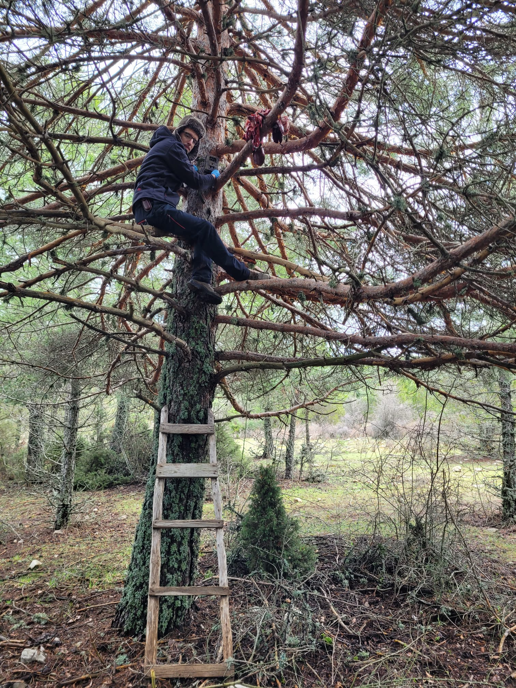
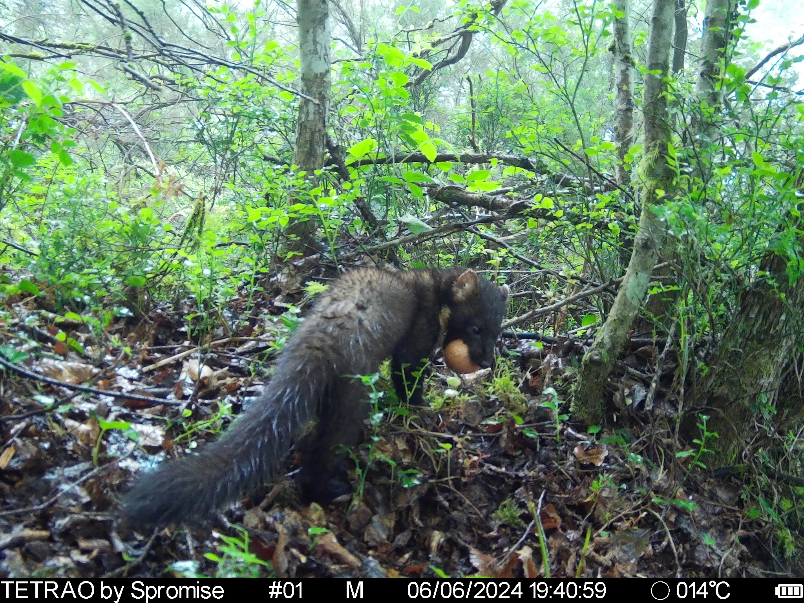
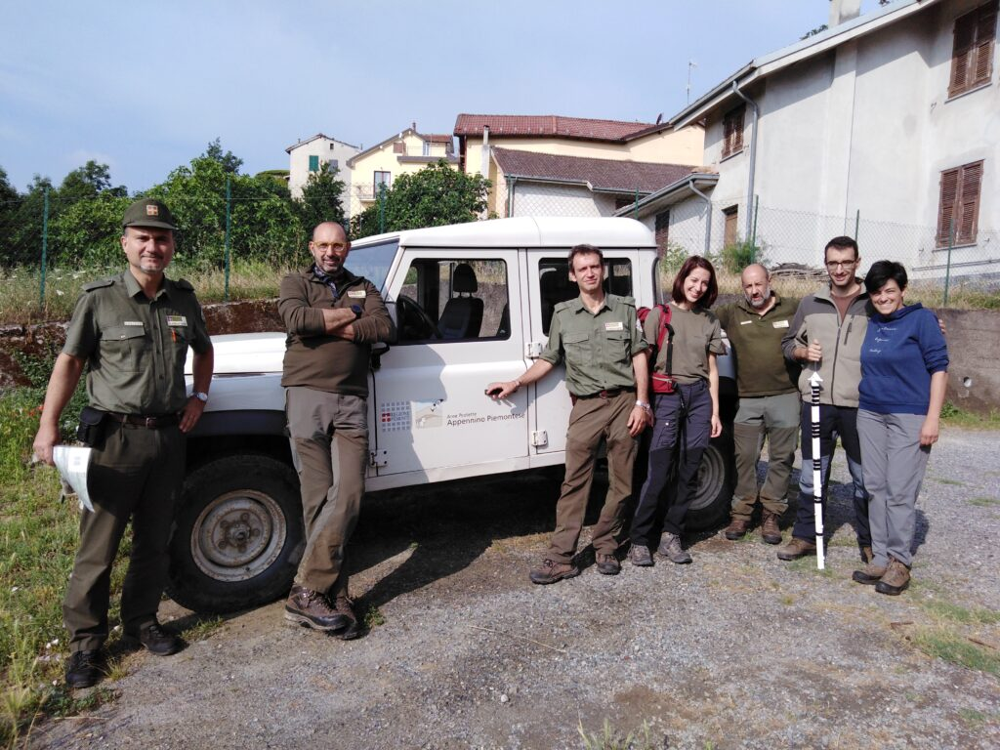

Research
Narrative description
My research is focused on developing and fine-tuning
cutting-edge tools for wildlife management and conservation.
Below you can find a short description of the main research lines in
which I focus my research.
Projects
Impact of diversionary feeding at population level
Recent studies concluded that ground-nesting birds are 86 %
more likely to decline than birds with other nesting strategies, and
indeed, 74% of ground-nesting species were in decline. Predator control
has been traditionally used, but this is controversial, cost-prohibitive
and has ethical limitations. In this context, diversionary
feeding (deliberate provisioning of food to explore the
propensity of individuals to exploit the most easily accessed resource).
In collaboration with colleagues from IREC we are assessing a key question
about diversionary feeding: how diversionary feeding affects in terms of
abundance, aggregation, occupancy, etc predators’ populations.
Preliminary results suggested that diversionary feeding has not effect
on predators occupancy nor aggregation (more soon!).

Utility of diversionary feeding on reducing predators impact on ground-nesting birds
Related to the previous section, I am also assessing the utility of
diversionary feeding to reduce the predators impact on ground nest.
Particularly, I am working in the Pyrenees and Cantabrian Mountains
(Spain), where capercaillie (Tetrao urogallus) is experiencing
a strong decline. The western capercaillie is a Eurasian species that
inhabits the extensive boreal coniferous forests of northern Europe and
Asia, as well as the large mountain ranges of southern Europe (including
the Alps, Balkans, the Carpathians, the Jura Mountains, the Pyrenees,
and the Cantabrian Mountains). While the species status is “Least
concern” according to the IUCN, the global population trend is
decreasing, with a severe decline in many regions -particularly in
southern and central Europe, and Scotland-, and even extinction in
others.Previous studies have suggested that poor breeding success rather
than mortality of full-grown birds was responsible for the decline of
capercaillie. More relevant, recent studies have also demonstrated that
diversionary
feeding increase capercaillie’ productivity.

Camera trapping box: survey design, camera performance, etc.
I have worked (and continue to work) on various jobs related to the
operation of cameras, and key points when designing a photo-trapping
studio. From an experiment in which we compared various camera traps
(including Reconyx, Bushnell, Scoutguard, Ltl Acorn and Keepguard) and
identified the main factors that determine whether an animal passes in
front of a camera and is detected (or not). Spoiler, cameras miss a lot
more than they detect! And also other work in which we evaluated the
effect of placing three cameras per sampling point (not in the same
tree, but in the surrounding area) on detection rates. Also the effect
of changing camera locations instead of keeping them fixed for the whole
study period, etc.

African swine fever emergence
African swine fever (ASF) is a virus causing 90% mortality in wild
boar and domestic pigs. During my first postdoc, I focused my research
to monitor wild boar populations in north Italy, were the first case of
an infected wild boar was reported just 15 days after my thesis viva.
First, I led a review
on management tools and opportunities for ASF control in wild boar
populations. Then, we established a monitoring programm in north Italy,
in zones infected (e.g. Capanne di Marcarolo Natural Park, see picture
with Marcaroli’s) and border zones (Po valley, Pavia region, etc). It
was not only about camera trapping, but also environmental DNA (eDNA).

Density estimation & unmarked populations
This is likely my main research line. I dedicate my PhD to develop and harmonize camera trapping methods to estimate population density of unmarked populations (those in which is not possible to identify animals). I have been especially focused on random encounter model (REM), comparing its reliability against benchmark methods, comparing its performance against other camera trapping unmarked methods, optimizing its applicability, etc. I have also experience in other unmarked methods, such as camera-trap distance sampling (CTDS), space to event model (STE), and random encounter and staying time (REST). For instance, I used CTDS to estimate crested porcupine (Hystrix cristata) density on its northern distribution range in Europe. I have also experience in other methods, such as Spatial capture–recapture (SCR) and line and point distance sampling (DS).
Camera trapping & movement ecology
Capturing and tagging with telemetry wild animals is time-consuming and not flexible in some situations. Expanding the utility of camera trapping in movement ecology studies is something in which I am particularly interested. I have been focused on day range (daily distance traveled), which is a key parameter in REM. I have also expanded the utility of camera trapping in this topic by publishing the R package trappingmotion
Integrated wildlife monitoring
Integrated wildlife monitoring merges wildlife health and host
community monitoring for effective disease management and prevention. I
did my PhD in a “health and biotechnology group (SaBio)”,
and my first postdoc in a Veterinary Faculty (UniTo), so I
have led the host community monitoring in several studies. I have worked
with shared diseases between wildlife and livestock such as African
swine fever (ASF), bovine tuberculosis, sarcoptic mange, toxoplasma
gondii or bluetongue among others. I dedicated my first postdoc at the
University of Turin to design, implement (in collaboration with Italian
authorities) and fine-tuning an integrated wildlife monitoring program
to monitor the spread of ASF in the infected populations of Italy.